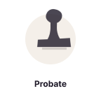
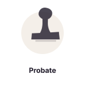

What is a nootropic, and how does it work?
A nootropic is a substance that enhances cognitive function. Nootropics work by affecting various neurotransmitters in the brain, such as dopamine and serotonin, to improve mood, memory, and concentration.
How does NZT-48 compare to other nootropic supplements?
NZT-48 is formulated with a unique blend of natural nootropics that are designed to work together to provide maximum cognitive benefits. While there are many nootropic supplements on the market, NZT-48 has been carefully developed to provide a comprehensive solution for improving cognitive function.
NZT-48 is designed to provide a range of cognitive benefits, including improved focus and concentration, enhanced memory and creativity, reduced stress and anxiety, and overall improved brain health.
What are the benefits of using NZT-48?
NZT-48 can provide benefits such as increased focus and concentration, improved memory and creativity, reduced stress and anxiety, and enhanced overall brain health.
What are the ingredients in NZT-48?
The ingredients in NZT-48 are clinically based to support brain health and focus. They are a combination of natural nootropics like ginkgo biloba, alpha GPC, hyperzine A, phosphatidylserine and more!
Suspendisse eu nisl. Nullam ut libero. Integer dignissim consequat lectus.
Class aptent taciti sociosqu ad litora torquent per conubia nostra, per
inceptos himenaeos.


 
